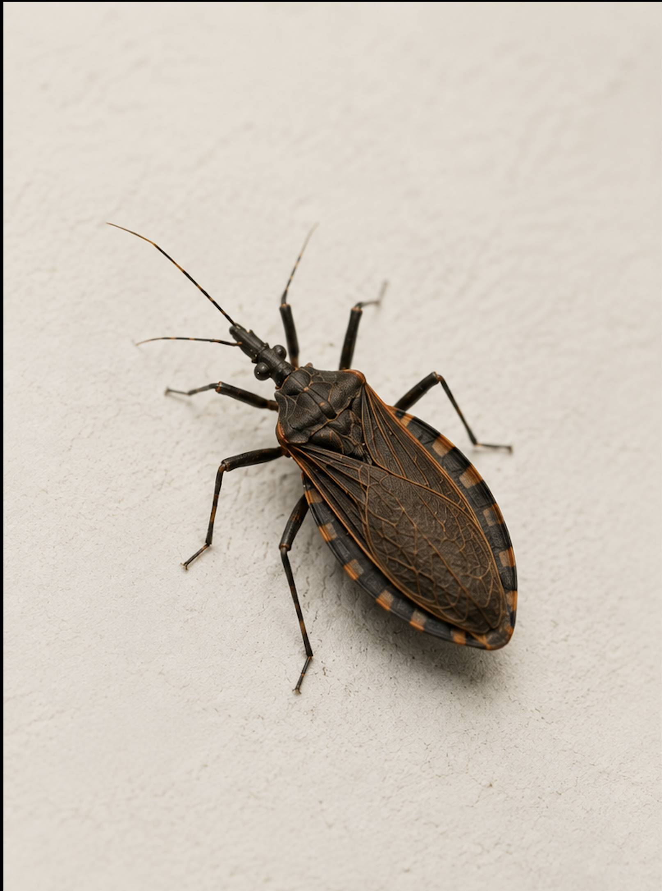
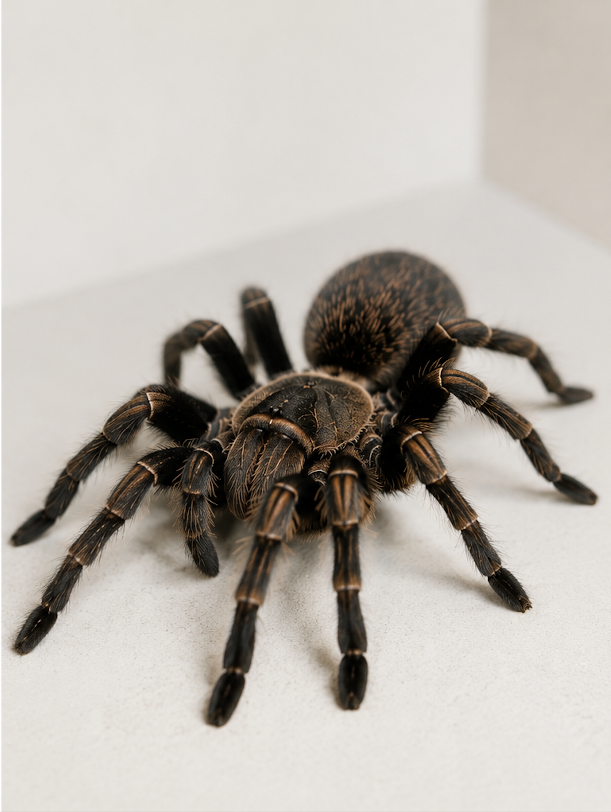

Research line
Triatominae
Evolution, systematics and phylogenomics of Chagas disease vectors.
Learn more →Researcher working on evolution, systematics and genomics of Neotropical organisms, with emphasis on Triatominae and Theraphosidae.
My work combines field biology, systematics, phylogenetic inference and high-throughput sequencing to investigate diversification, adaptation and biogeographic history.
I am a postdoctoral researcher at São Paulo State University (UNESP), working in evolutionary biology, systematics and phylogenomics. My research focuses primarily on Triatominae, including vectors of Chagas disease, and Theraphosidae, especially Neotropical tarantulas. I combine morphological analyses, genomic data, geometric morphometrics and comparative approaches to investigate species boundaries, evolutionary relationships and genomic variation.
Two core biological systems connect my work in biodiversity, evolution, systematics and comparative genomics.

Evolution, systematics and phylogenomics of Chagas disease vectors.
Learn more →
Phylogenomics, biogeography and diversification of Neotropical tarantulas.
Learn more →Reproducible computational workflows are a central part of my research, collaboration and teaching.
Workflows, scripts and training resources for UCEs, phylogenomics, transcriptomics and genomic analyses.
See repositories →Research identifiers, publications and professional profiles.